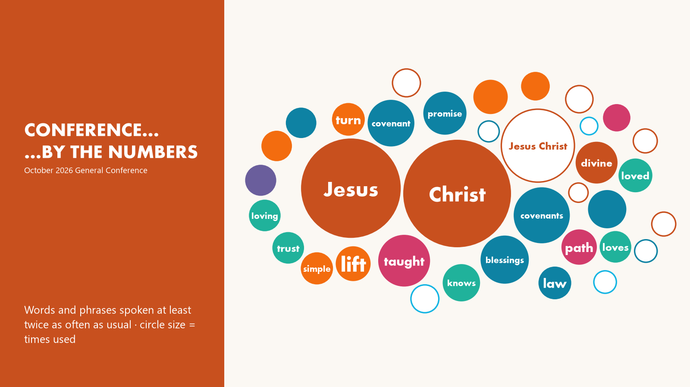
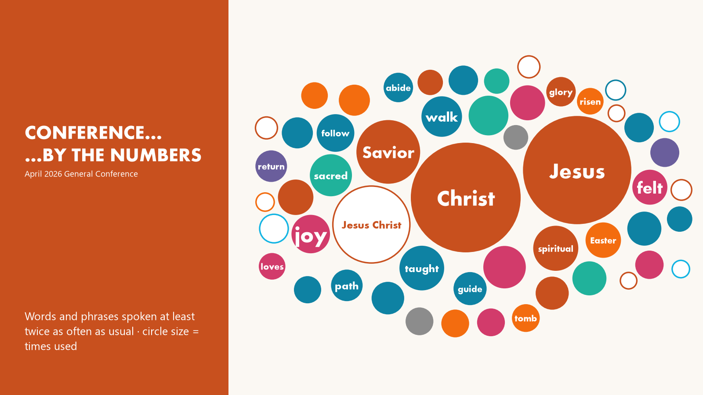

Which words and phrases did the speakers emphasize? Each conference is compared with every conference before it. Open a conference and tap any word to see its use over time and the talks behind it.

October 2026Interactive · Poster (PNG) · Data
April 2026Interactive · Poster (PNG) · Data


Method
- Only spoken words are counted: no titles, summaries, footnotes, inline references, headings or web addresses.
- A word's rate per 10,000 words is compared with its average rate in all earlier conferences since 1971.
- Emphasized: among the 300 most-used words, used at least twice as often as usual; names and everyday words are left out. Tracked phrases qualify the same way with at least 10 uses.
- Rising: used more than usual and climbing steadily for decades. Unique: never spoken in conference before (since 1971).
Full method, code and data: github.com/washburnadam/conf-by-num. Articles: Conference by the Numbers on Medium.
How to reproduce
The repository has the code and the derived numbers, not the talk text. Its README lists the commands that download the talks from the Church's website (politely, with a cache) and rebuild every count and chart.